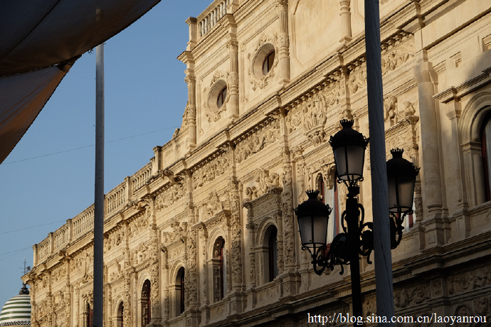
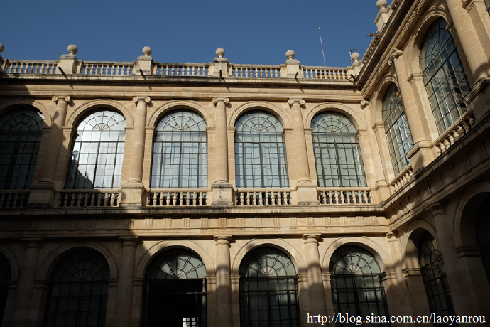
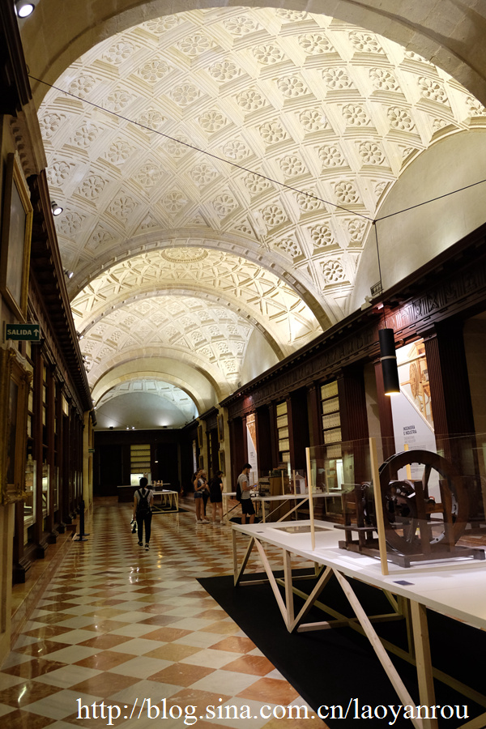
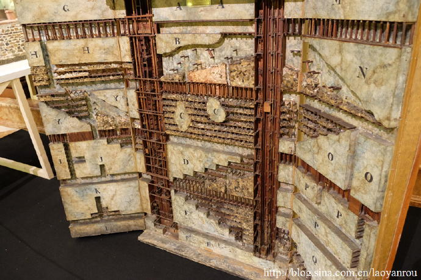
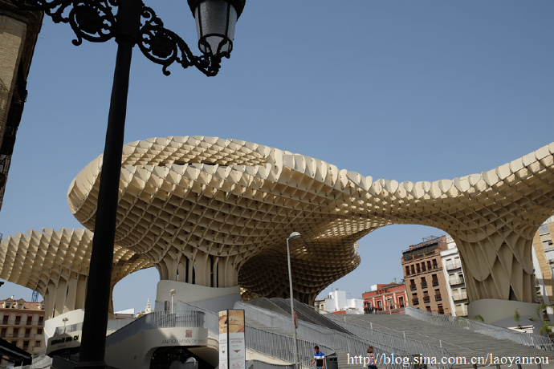

欧游札记之火舞西班牙（Day7塞维利亚—西印度群岛综合档案馆—都市阳伞）

Day7塞维利亚—西印度群岛综合档案馆—都市阳伞
塞维利亚的第二日行程基本囊括了所有精华景点，因此最后一日的安排尤为轻松。一大早我们就趁着凉快溜了个小弯去了塞维利亚王宫及主教堂周边晃了一圈，发现王宫边上的西印度档案馆还没开门，便继续兜到了河边的黄金塔附近闲逛、照相。

等到档案馆开了门我们难得成为了第一拨参观的游客，档案馆顾名思义是存放各类档案资料的，照常理应该没有什么看头，就算去看也不一定能看得懂那一堆艰涩深奥、密密麻麻的西班牙文字。但话不能说那么早，进去后发现里面确实内有乾坤，长见识开眼界了。这座文艺复兴风格的档案馆来头不小，由埃斯科力亚尔宫的建筑师赫里拉于1572年建造，早年曾是商品交易市场，后来华丽转身变为了收藏新大陆相关文书及征服新大陆的贵重资料，哥伦布、麦哲伦的亲笔书信赫然在内。

征服新大陆的历史与航海技术发展密不可分，馆内展出了各时代不同类型的商船、战舰模型，甚至包括剖面模型展示和详细的舰船构造图。

而新大陆的发现也意味着对新大陆财富的掠夺和资本主义的原始积累，档案馆展出了一件锁栝机关极其复杂的包铁财宝箱，我们按照讲解员的操作提示尝试了一下，只见几十件由铸铁打造的锁头构件依次联动、层层传导才将锁给打开，仿佛哈利波特魔法世界里的魔法箱的神操作一般，与我们木匠祖师爷鲁班的巅峰之作鲁班锁有得一拼。
惊叹于奇技淫巧之余，一个事实无法改变，即无论新大陆发现者们收藏财富的机关如何复杂，依然是掠夺无数新大陆人民血汗的敛财工具。再换个角度来说，尽管新大陆发现者们根本目的是掠夺各种资源以满足资本原始积累需要，但客观上出于自身殖民利益考虑也为新大陆修建了不少道路、矿山、桥梁等基础设施，同时也传输了西方先进技术及文化知识，在一定程度上促进了新大陆的经济社会发展，档案馆里为彰显其“丰功伟绩”也陈列了不少殖民者们在新大陆兴建的铁矿、金矿的剖面模型，以及铁桥等基础交通设模型，还有一些对新大陆的自然环境研究的文书资料。

但所有这些都无法掩盖资本主义国家对新大陆殖民、剥削扩张的血淋淋的本质面目。近现代包括所谓两任“日不落”帝国——西班牙及英国在内的资本主义国家蓬勃发展实际上都是建立在新大陆国家丧失主权、流失资源、牺牲劳动力的种种不平等条约和累累白骨之上的，从头到脚流淌着肮脏的鲜血。
怀着较为复杂的心情结束了西印度群岛综合档案馆的参观，领略了新大陆发现的辉煌也看见了被殖民国家深深的创伤，落后就要挨打，千古颠扑不破的真理啊！尽管过去了这么多年，以英美为首的西方资本主义国家早已通过掠夺剥削新大陆等欠发达国家完成了资本原始积累为前两次工业革命的飞速发展注入了源源不断的动力，取得了今日领先全球的成就和地位。而进入了二十一世纪现代文明社会，赤裸裸地通过殖民侵占来掠夺剥削弱国的行为已不复有生存的土壤，但发达国家对发展中国家的变相殖民依然在各个领域阴魂不散，如技术殖民、金融殖民、文化殖民、意识形态殖民等等不一而足，其本质都是延续资本主义国家剥削掠夺的天性，通过技术霸权、金融霸权和军事霸权花尽可能小的代价让全球人民为自己打工、割全球人民的韭菜，做梦做到钱上门，数钱数到手抽筋。放眼世界上各种政局动荡更迭、战乱纷争、勾心斗角，幕后实际上都是欧美为首的西方资本主义国家为了攫取更多全球经济利益而操盘控局的各种表征，一部《纸牌屋》足以将其道貌岸然的逐利本性揭露得淋漓尽致，近来美国不单挑起中美贸易战、遏制中国制造2025、频频挥动技术霸凌大棒打压中国企业，而且连日本、欧洲、加拿大等老牌盟友都有杀错无放过，一系列退群和逆全球化行为证明其已经难以通过二战后所处心积虑构建的全球化体系掌控全球利益流向，反而越来越容易被中国为首的发展中国家搭顺风车所截胡分流，所以才破釜沉舟、宁可采用自损八百杀敌一千的茅招，也要千方百计不计一切代价地拖慢对手的前进速度。只可惜的是机关算尽太聪明，俱往矣，大势已去，作为全球化始作俑者的美国在业已发展为滚滚洪潮的时代浪潮前的逆流而动犹如蚍蜉撼树，自不量力也不得人心，而从来没有沦为殖民地也从来没有殖民过任何国家的中国，所倡议的“一带一路”核心要义在于维护世界和平促进共同发展，从根本上打破了以往发达国家与发展中国家之间此消彼长、你死我活的剥削与被剥削、掠夺与被掠夺的旧世界格局，乃大势所趋，人心所向，必将造福全球全人类，所以无论今后遇到何种艰难险阻、受到旧势力何种阻挠，都将势不可挡地成为世界发展的新方向，最终打破西方资本主义国家所主导构建的世界旧秩序。
看罢了塞维利亚遗留下来的西班牙大航海时代的痕迹，作为调剂，我们在行程最后一站安排了一个近现代建筑的网红打卡点—都市阳伞，这是西班牙国内规模最大的近代木质现代建筑之一，远望过去，只见几大片白色杉木编制而成的格栅状穹顶如同几把巨伞覆盖着整一个小广场，煞是好看，妥妥的后现代主义风格，唯一遗憾的是中看不中用，猛烈的阳光透过格栅照到广场上，没几个游人敢在晌午时分在此逗留徘徊。所谓鱼和熊掌不可兼得，艺术性与功能性也往往难以调和，倘若都能像高迪高大爷作品那般完美融合于一体的话就再好不过了。
